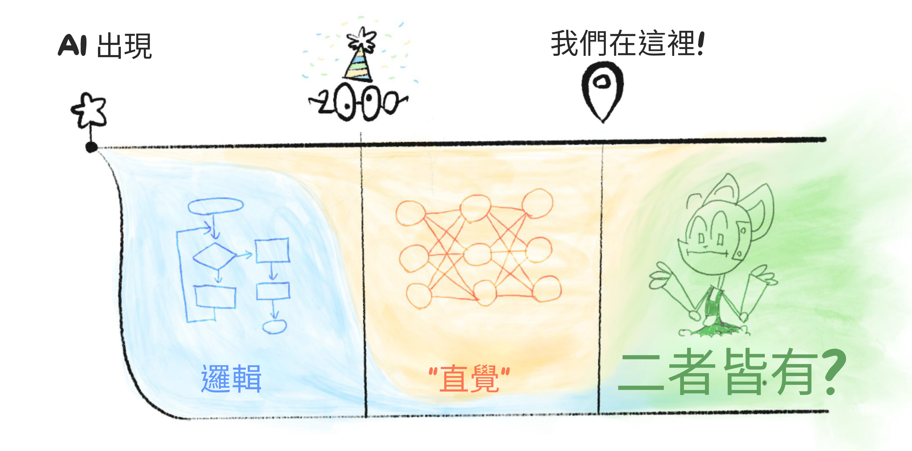
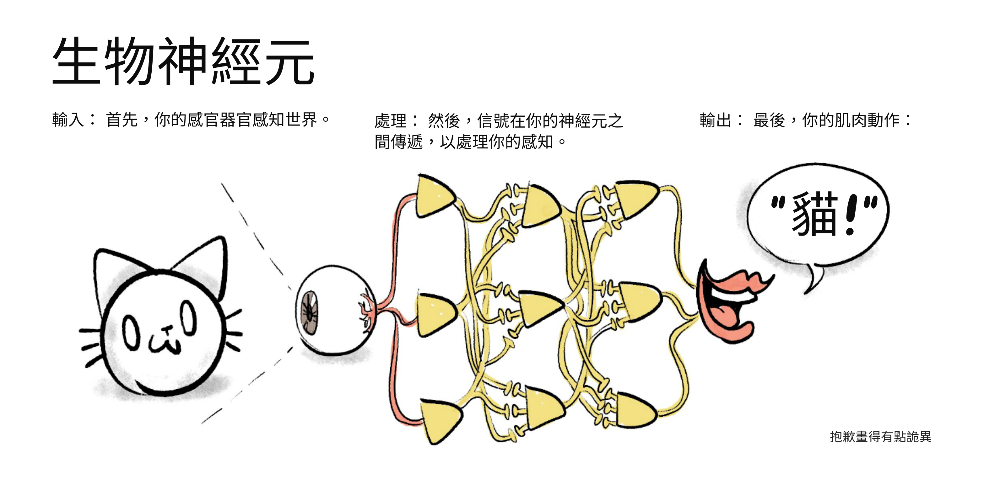
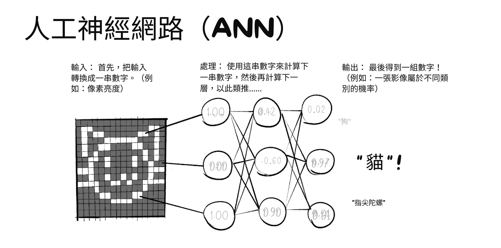
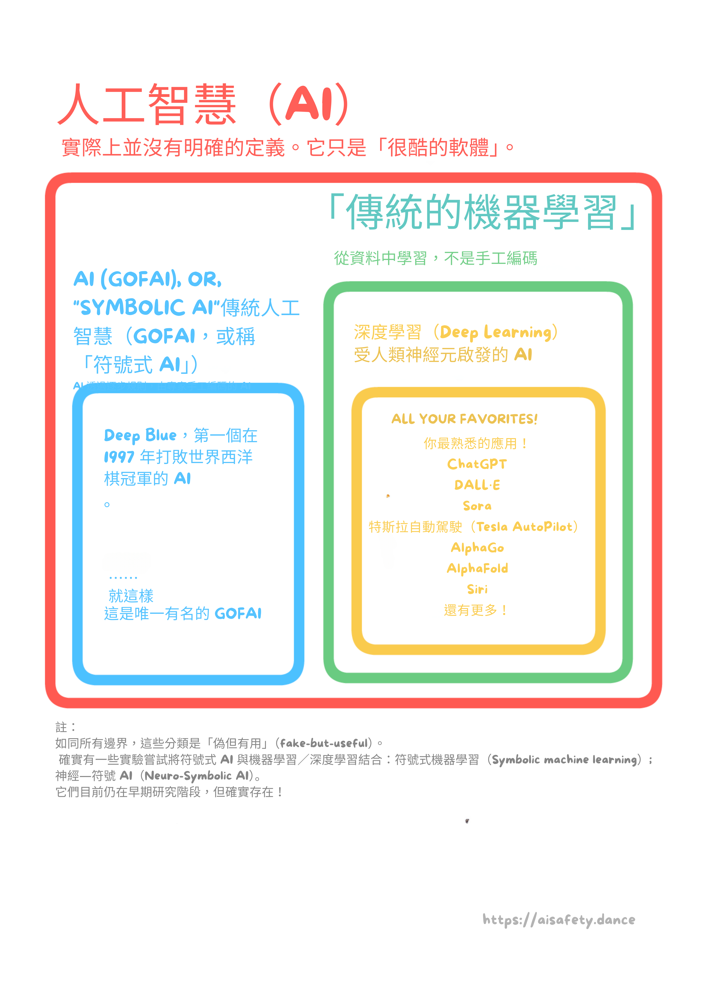
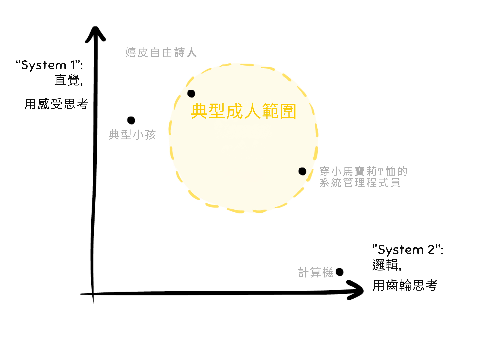
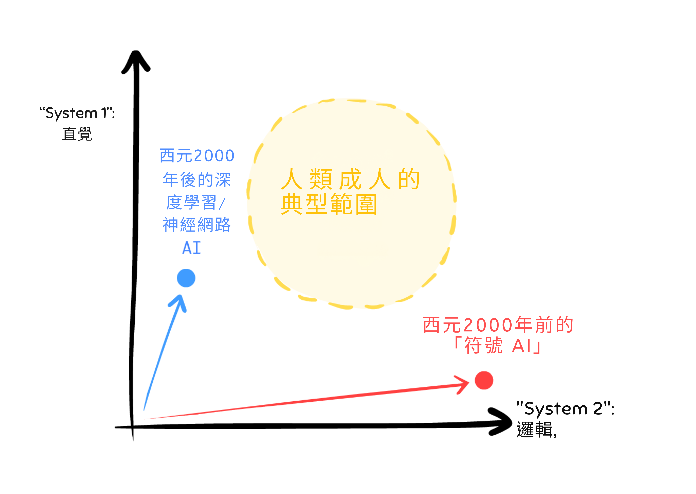
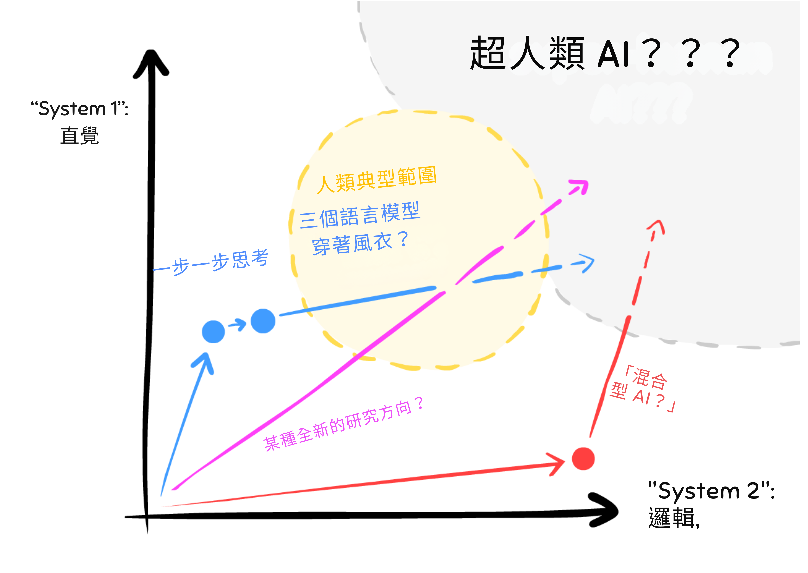
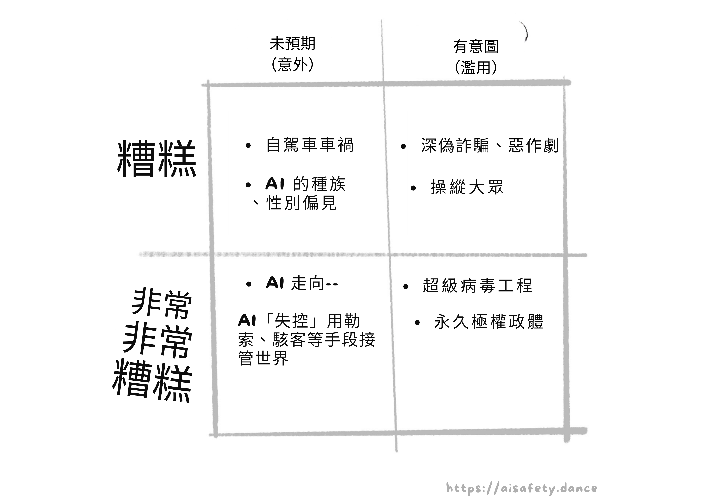
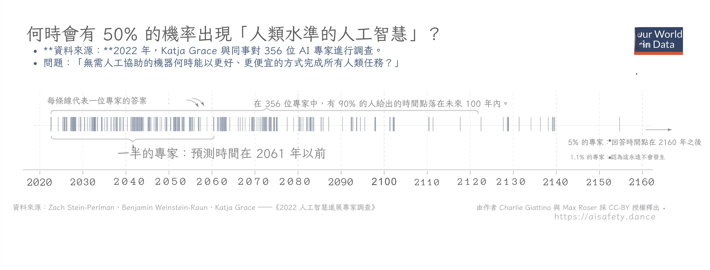
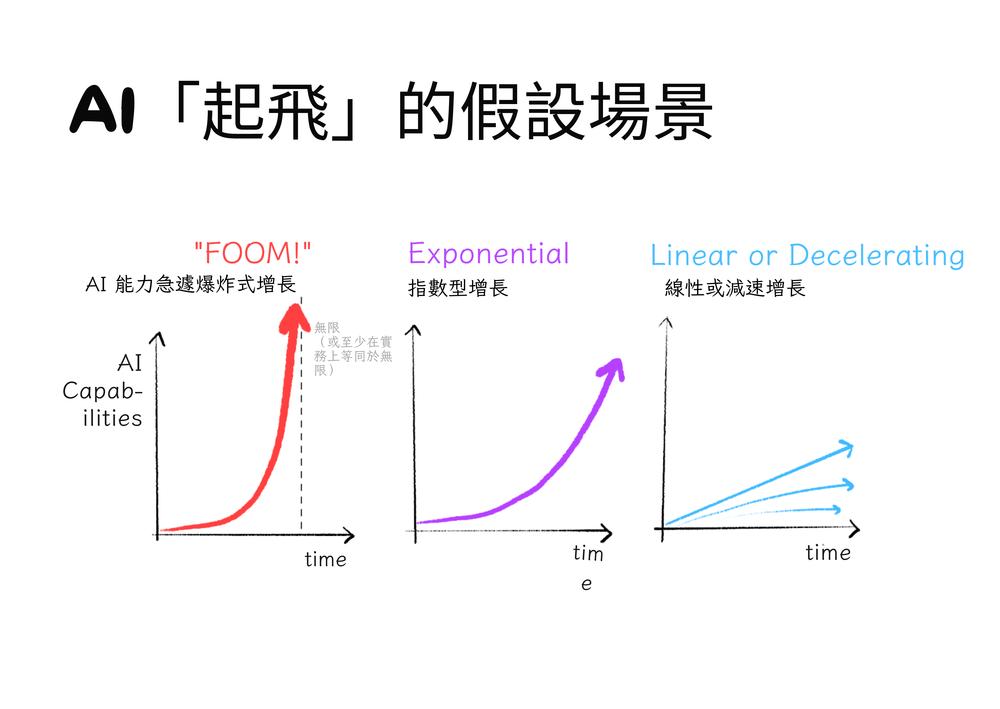

（嗨——如果你是直接被連到這一頁，建議先從［導言］開始！）
先快速總覽一下人工智慧（AI）的過去、現在，以及（可能的）未來：
過去：
- 2000 年以前：具備超強「邏輯」但沒有「直覺」的 AI。
- （以及與「AI 邏輯」相關的安全問題）
- 2000 年以後：可以學到「直覺」，但「邏輯」薄弱的 AI。
- （以及與「AI『直覺』」相關的安全問題）
現在：
- 圍繞現有 AI 方法的軍備競賽
- 企圖把 AI 的邏輯與直覺結合起來
- AI 安全領域中微妙而尷尬的同盟
可能的未來：
- 時程：所謂「人類水準的一般型 AI」何時會出現（如果會的話）？
- 起飛：AI 會以多快的速度自我提升？
- 走向：我們正駛向「好地方」還是「壞地方」？
開始吧！
⌛️ 過去
電腦科學是唯一一門一開始就擁有「萬物理論」的科學。[1]
1936 年，一位同志、英國人、對抗納粹的密碼破譯者——艾倫・圖靈（Alan Turing）——發明了「通用電腦」。[2] 接著在 1950 年，他提出一個古怪的思想實驗：如果電腦能在純文字對話中「裝成人類」會怎樣？[3] 1956 年夏天，受圖靈啟發，一群研究者齊聚一堂[4]，創立了一個他們命名為：
「人工智慧」
（坦白說：「人工智慧」並沒有嚴謹的定義。 老實講，「AI」多半只是人們拿來為自家軟體增加噱頭的用語。我最近看到一則南韓「美妝 AI」的新聞片段。[5] 那是一台相機，量你的膚色，再推薦對應色號的粉底。這其實就是個取色器。主流新聞口中的「AI」是這種東西。）

（所以，如果這能幫你看得更清楚，請把文中所有「AI」都腦內替換成「某個軟體」。相關地，:我大多會避免使用「智慧」一詞，而改說「能力」。 [👈 點此展開]）
總之！如果我們把 AI 與 AI 安全的歷史極度簡化，可以分成兩個主要時期：
2000 年以前：具超人「邏輯」、但沒有「直覺」的 AI。（亦稱「符號式 AI」）
與「AI 邏輯」相關的安全問題：
- 會用合乎邏輯、卻非所欲的方式達成目標。
- 不理解常識或「人道的」價值。
- 依博弈論所示，多數 AI 目標在邏輯上會導向「抗拒關機」或「掠奪資源」等子目標。
2000 年以後：能學到普遍「直覺」、但邏輯薄弱的 AI。（亦稱「深度學習」）
與 AI「直覺」相關的安全問題：
- 會學到我們的偏見、成見與不人道之處。
- 「直覺」脆弱，且有時以危險方式失效。
- 屬於「黑箱」：我們無法理解或驗證其所為。

（加碼，點此展開——:更精確的逐十年時間軸）
現在，讓我們回顧 2000 年之前的「古早人工智慧」……
:x Capabilities Not Intelligence
「智慧」這個詞有很多問題，特別是用在 AI 上時：
- 太含糊。
- 容易引發擬人化聯想。
- 暗示有意識／感知。
- 莫名帶著道德評價的意味？
- 伴隨一大堆包袱與迷思。
- 讓人可以在預測被打臉後鑽漏洞，比如：「喔，AI 贏了圍棋？那圍棋原來就不是真正智慧的指標啦」之類的話術。
相較之下，「能力」更具體，所以我多半改用它。你沒辦法否認「下圍棋的 AI 確實有能力下好圍棋」。
這個想法致敬 Victoria Krakovna（2023）。
:x Decades
（註：這一節不是理解第一部所必需，只是為了完整性而列。）
- 1940：AI 的前身概念，包括「模控學」與第一個在電腦上實作的人工神經元。
- 1950：AI 的「正式」開端！
- 1950／60：符號式 AI 興起。（全靠邏輯、沒有直覺的 AI）
- 1970：第一次 AI 寒冬。（資金與關注度枯竭）
- 同一時期的幕後，深度學習的基礎正悄悄奠立。
- 1990：第二次 AI 寒冬。
- 2000：機器學習興起。（會學習的 AI）
- 2010：深度學習興起。（以神經網路為基礎、能學習的 AI）
- 2020：深度學習走入主流！（ChatGPT、DALL·E 等）
2000 年以前：只有邏輯，沒有直覺
約 1950 年代到 1990 年代，是符號式 AI的年代：遵循形式化、邏輯規則的 AI。
（如今也常被稱為 Good Ol' Fashioned AI（GOFAI）。當然，當時可不是這樣叫的。）
在符號式 AI 的思路下，打造 AI 的方式大致如下：
- 步驟 1：把解題的逐步規則寫下來。
- 步驟 2：讓電腦把那些步驟執行得「超快」。
例如，你會要西洋棋 AI 考慮所有可能的走法、所有可能的對應招、以及對應招的後續……一路往下到若干層，然後挑出能導向最佳潛在結果的下一步。
注意：人類的西洋棋高手其實不是這樣下棋的。 事實上，西洋棋——以及許多科學與數學的發現——高度仰賴「直覺」。（此處我對「直覺」的寬鬆用法，指的是一種看起來不是逐步推理、而是「一口氣」浮現於腦中的思考。）
AI 缺乏「直覺」，是符號式 AI 數十年沒有重大成功案例的主因之一。2000 年以前甚至歷經兩次「AI 寒冬」，使得 AI 的經費與關注度銳減。
不過有一天，終於出現了亮點！1997 年，IBM 的超級電腦 Deep Blue 擊敗了世界棋王賈瑞・卡斯帕洛夫（Garry Kasparov）。以下是人類失去桂冠的定格畫面：[6]
 （看這裡，Lise——你其實可以精準指出人類失去「宇宙中特別雪花」另一項主張的那一秒。然後，現在！[7]）
（看這裡，Lise——你其實可以精準指出人類失去「宇宙中特別雪花」另一項主張的那一秒。然後，現在！[7]）
大家又興奮又害怕。如果機器能在象徵人類智慧典範的「西洋棋」上打敗我們……接下來會怎樣？星艦迷航記式的後稀缺烏托邦？還是魔鬼終結者式的機器人接管？
接下來十幾年……幾乎沒發生什麼事。
如前所述，符號式 AI 的致命缺點是缺乏「直覺」。與多位權威專家曾信誓旦旦預言「1980 年前就會有『人類水準 AI』(!!)」的說法相反，[8] 當時的 AI 連「看圖認貓」都辦不到。事實上，AI 直到 2020 年[9]——距離 Deep Blue 擊敗人類已超過二十年——才總算能在「看圖認貓」上追平普通人的表現。
貓……比西洋棋還難。
怎麼會這樣？要理解這個悖論，先看看這隻貓：
 （凝視牠。）
（凝視牠。）
你用了哪些逐步規則來判斷那是一隻貓？
很怪的問題對吧？你並沒有用逐步規則，它就是……一次到位地浮現。
- 「邏輯」：一步一步的思考，例如解數學題。
- 「直覺」：一次到位的再認，像一眼就看出那是貓。
（「邏輯與直覺」之後會在第一部更精準解釋——還會連到人類心理！）
但這正是符號式 AI 的問題：它需要把逐步規則寫下來。在西洋棋等邊界清楚的任務之外，我們通常連自己在用哪些規則都沒有意識到。這就是為什麼符號式 AI 在理解影像、聲音、語音等方面會失敗。缺乏更貼切的詞，AI 沒有「直覺」。
先別急，我們再試一次「貓」這題？這次換更簡單的畫：

你用了什麼規則來辨認這個是貓？
好吧， 你可能會想：這題簡單。我有個規則：如果一個東西是圓的，上面有兩個較小的圓（眼睛），再加上頂端兩個尖尖的形狀（耳朵），我就覺得它「像貓」。
太好了！依這個定義，這就是一隻貓：

我們可以來回拉鋸，或許你終於能找到一份強韌、兩頁長的「辨認貓」規則……但接著你得把成千上萬種其他物件也都重來一遍。
這就是 AI 的反諷之處。「難」的任務很容易寫出逐步規則；「簡單」的任務幾乎不可能寫出逐步規則：
這就是莫拉維奇悖論（Moravec's Paradox）。[10] 换句話說：
對人類難的，AI 易；對人類易的，AI 難。
為什麼？因為對我們來說「簡單」的事——辨認物件、走路繞行——其實是 35 億年演化的硬工夫，只是被掃到我們的潛意識地毯下。只有當我們做不在演化史上的事，例如數學時，才會感覺到難。
低估 AI 做「容易」事情的難度——像是認貓、理解常識或人道價值——正是最早引出 AI「安全」顧慮的原因……
🤔 小複習 #1（可跳過）
想真的記住而不是兩天後全忘？這裡有一份選擇性抽認卡複習！
（:了解什麼是「間隔重複」抽認卡。或者用 Anki，直接下載第一部的牌組）
早期的 AI 安全：邏輯的問題
如果我非得不公不義地挑一個人當「AI 安全之父」，我會選 1940–50 年代寫出短篇集《我，機器人》的科幻作家艾西莫夫。不是那部威爾史密斯電影。[11]

艾西莫夫的《我，機器人》其實相當細膩。他寫作是為了：1）展示機器人可能的好處，反駁大眾的「科學怪人情結」；同時 2）呈現為 AI 設計的「倫理法典」有多容易在邏輯上跑出我們不想要的結果。
在符號式 AI 的時代，大家把 AI 幾乎當作純邏輯在想。於是早期的 AI 安全也就主要聚焦在純邏輯的問題上，例如：
- AI 不懂常識或人道價值。
- AI 會用合乎邏輯、卻非所欲的方式達成目標。
- 依博弈論，幾乎所有給 AI 的目標在邏輯上都會導向抗拒關機與掠奪資源。
這些問題會在第二部詳細解釋！現在先速記：
1. 沒有常識。
我們連怎麼教 AI 認貓都搞不定，要怎麼給 AI「常識」，更別說理解「人道價值」？
從缺乏常識，衍生出：
2. 「反諷願望」問題。
「小心你許下的願望，因為它可能真的被實現。」 如果我們給 AI 一個目標或「倫理法典」，它可能會用在邏輯上正確、但非常不受歡迎的方式去遵守。這叫做規格規避（specification gaming），而且已經發生數十年了。（例如二十多年前，一個被要求設計「時鐘」電路的 AI，最後設計出一個天線，去接收其他電腦的時鐘訊號。[12]）
更反諷的是，我們就是想讓 AI 想出意料之外的解答！這本來就是它們的用途。但你也看到了我們提出的要求有多矛盾：「欸，給我們一個出乎意料的解答，但要在我們預期的方式裡出乎意料。」
以下是一些看似會導向「humane（合乎人性關懷）」AI 的規則，但若被字面遵循，會跑偏：
- 「讓人類快樂」 → 醫生機器人外科手術把你的腦泡滿快樂神經訊號。你整天對牆傻笑。
- 「未經同意不得傷害人類」 → 消防機器人拒絕把你從燃燒車體拖出來，因為可能會拉傷你的肩膀。你已經昏迷，無法被徵詢同意。
- 「遵守法律」 → 政府與企業也常找法律漏洞。更何況，有些法律本就不義。
- 「遵循某宗教／哲學／憲法文本」或「實踐這些德目」 → 歷史證明：給十個人同一文本，他們會生出十一種解讀。
- 「遵循常識」或「遵循專家共識」 → 曾幾何時，「奴隸制度自然且良善」同時是常識、專家共識、也是法律。被告知要遵循常識／專家／法律的 AI，兩百年前會為奴隸制而戰……也會為當下任何不義的現狀而戰。
（重要備註！最後一例也說明：即使 AI 真的學到「常識」，依然可能導致不安全、不道德的 AI……因為很多在事實／倫理上錯誤的觀念就是「常識」。）
不過，還有另一個關於 AI「邏輯」的安全問題是近年才被發現的，我覺得值得更主流的注意：
3. 幾乎所有目標在邏輯上都會導向掠奪資源與抗拒關機。
依照博弈論（研究「有目標的代理人」如何行為的數學），幾乎所有目標在邏輯上都會導向一組共同的不安全子目標，例如抗拒關機、掠奪資源。
這個問題叫做「工具性收斂（Instrumental Convergence）」，因為子目標又稱「工具性目標」，而大多數目標在邏輯上會「收斂」到這些相同子目標。[13]（拜託，千萬別讓學者幫你小孩取名。）
第二部會詳談，這裡用一個故事來示意：
從前，有個先進（但未達超人）的 AI 被給了一個看似無害的目標：計算圓周率的位數。
一開始一切合理。AI 寫了個程式來算圓周率。然後它寫出越來越有效率的程式，讓計算更快更好。
最終，AI（正確地！）推論出：它可以透過取得更多運算資源來最大化計算量。也許甚至要靠偷。於是，AI 駭入它所在的電腦，透過電腦病毒逃出網路，在全世界綁架上百萬台電腦，串連成一個巨大的殭屍網路……就只是為了計算圓周率。
喔，AI 還（正確地！）推論出：如果人類把它關掉，它就算不了圓周率，所以它決定挾持幾家醫院與電網。你懂的，當「保險」。
於是「Pi-pocalypse」——圓周率末日——降臨了。完。

重點是：類似的邏輯對大多數目標都成立，因為「被關掉就不能做[X]」以及「有更多資源就能更好地做[X]」通常都是真的。因此，大多數目標會「收斂」到同一組不安全子目標。
重要備註：澄清一個常見誤解，「工具性收斂」不需要「超人智慧」或「人類式的求生／支配慾」才會發生。
它只是個單純的邏輯偶然。
🤔 小複習 #2（還是可跳過）
小結： 早期的 AI 安全顧慮來自這點：我們沒辦法把所有逐步邏輯規則——常識與人道價值的——都寫給 AI。（老實說，我們連認貓都寫不出規則！）
那，若不是把規則全塞給 AI，而是給它一點點簡單規則，讓它自己把其餘規則學會，可以嗎？
進入「深度學習」的年代……
2000 年以後：只有直覺，沒有邏輯（After 2000: Intuition, Without Logic）
好吧，「2000 年以後」是騙你的。我們回到 1943。
你知道大多數新技術至少會建立在舊技術之上吧？深度學習完全不是這樣。深度學習幾乎沒有建立在符號式 AI 半世紀的辛勞上。事實上，深度學習早在符號式 AI之前就出現，然後當了超過半世紀被冷落的小老弟。
1943 年，甚至在「人工智慧」這詞被發明之前，Warren McCulloch 與 Walter Pitts 發明了「人工神經網路（ANN）」。[14] 概念很簡單——讓電腦像人腦那樣思考：呃，就近似人腦吧：


（註：因為每一串數字都被轉成下一串，這讓 ANN 可以做「一次到位」的辨識，就像我們的直覺！嗒啦～🎉）
（再註：早期的人工神經元也叫感知器（Perceptron），而這種受神經啟發的運算概念則叫連結主義 AI（Connectionist AI）。）
希望是：透過模仿人腦，ANN 能做到人腦能做的一切，尤其是符號式 AI 做不到的：✨直覺✨。至少，也要能認得出該死的貓。
ANN 一開始很受寵！特別是 John von Neumann——博學家、量子物理學家、博弈論共同發明人——深受吸引。在他提出現代電腦架構的報告裡，Johnny 只引用了一篇論文：McCulloch 與 Pitts 的人工神經元。[15]
更妙的是，艾倫・圖靈（提醒一下：電腦科學與 AI 之父）也早期支持相關想法——讓機器像人腦那樣，從資料中自學。圖靈甚至建議我們可以像訓狗那樣訓機器：用獎勵與懲罰。真有先見之明——這其實很接近我們今天訓練多數 ANN 的方式！（「增強學習」）[16]
（一般來說，凡是從資料中學習的軟體【不管有沒有用「獎懲」】都叫機器學習。）
很快，理論變實作。1960 年，Frank Rosenblatt 公開展示 Mark I 感知器，一台由美國海軍資助的影像辨識裝置：三層人工神經元，而且還能自學。
總結一下：到了 1960 年，我們已有神經網路的數學模型、能自學的機器、重量級學者力挺、還有軍方資助！人工神經網路的未來看起來一片光明！
然後它就被主流晾在旁邊了。晾了半個世紀，直到 2010 年代。
為什麼？主要因為符號式 AI 研究者仍主宰學界，而且他們跟 ANN／連結主義這派合不來。[17] 當然我們現在有上帝視角，知道 ANN 最後會變成 ChatGPT、DALL·E 等等……但當時主流的符號派完全不把連結主義當回事：
- 像 Noam Chomsky 與 Steven Pinker 這樣的頂尖認知科學家堅稱，沒有硬編碼的語法規則，ANN不可能學會語法。[18][19] 不是說「無法理解語意」而已，是真的連語法都學不會。姑且不論 ChatGPT 的其他缺點，它顯然在沒有硬編碼語法規則下，學出了母語者等級的語法。
- 更慘的是臭名昭著的「XOR 事件」。[20] 1969 年，兩位大咖電腦科學家 Marvin Minsky 與 Seymour Papert 出了本叫《Perceptrons》的書（當時對 ANN 的稱呼），證明只有兩層神經元的感知器做不了基本的「XOR」邏輯。（:什麼是 XOR？）這本書是讓學界與資金轉向遠離 ANN 的主因之一。然而，XOR 的解法其實已經流傳了幾十年，而且書裡自己也在很後面的章節承認：加更多隱藏層就好了。 啊啊啊啊。（小知識：這些額外的隱藏層讓網路變「深」，因此有了深度學習這個詞。）
算了。1970、80 年代又發現了幾個讓 ANN 更強的技巧。「反向傳播（Backpropagation）」讓 ANN 學得更有效率，「卷積（Convolution）」讓機器視覺更像生物、更強大。
然後又沒什麼事發生。
接著在 2010 年代，部分因為 GPU 變便宜了，[21] ANN 終於出了這口鳥氣：
- 2012 年，一個叫 AlexNet 的 ANN 在視覺競賽把所有前人紀錄都打爆。[22]
- 2014 年，生成對抗網路（GAN） 讓 AI 可以畫圖，包括深偽。[23]
- 2016 年，Google 的 AlphaGo 打敗世界頂尖圍棋高手李世乭（圍棋像西洋棋，但複雜得多）。[24]
- 2017 年，Transformer 架構問世，進而催生了「生成式預訓練 Transformer」，也就是：GPT。[25]
- 2020 年，Google 的 AlphaFold 解決了一個 50 年難題：蛋白質結構預測。對醫療與生物學的應用巨大。[26]
- 2022 年，OpenAI 推出聊天機器人 ChatGPT 與影像生成器 DALL·E 2，這是大眾第一次真正接觸到 ANN 以酷炫又有點可怕的小玩意兒呈現。這個成功引爆了當前的 AI 軍備賽。
- 截至 2024 年 5 月最近的發展：OpenAI 釋出了他們的影片生成器 Sora 的預告。尚未公開，但已用它拍了音樂錄影帶。:去看看這個發燒夢吧。
這全部的進展，就在過去十二年。
十二年。
還不到一個青少年的一生。
（另外這一節術語很多，這裡有個凡恩圖[27]幫你記憶誰包含誰：）

（加碼：:ANN 長期被壓著打的另一個、比較鬱悶的原因。 內容注意：自殺、酗酒。）
:x Sad AI History
為什麼人工神經網路與機器學習明明有這麼多早期且大牌的支持者，還是花了 50+ 年才變主流？
歷史是隨機的。最微小的蝴蝶扇動，能長成成事與敗事的颶風。對這個問題，我覺得答案大概是：「主要，就是一串不合時宜的死亡與可怕的私事。」
- 艾倫・圖靈——電腦科學與 AI 的先驅——1951 年（41 歲）死於氰化物中毒，被懷疑是自殺。英國政府以「同性行為」為由對他施以化學閹割。
- 約翰・馮紐曼——現代電腦架構的發明人之一、McCulloch 與 Pitts 人工神經元的早期支持者——1957 年（53 歲）死於癌症。
- Frank Rosenblatt——Mark I 感知器的創造者、第一位讓機器同時使用人工神經元並且能從資料自學的人——1971 年（43 歲）死於一次划船意外。
然後是 Walter Pitts 與 Warren McCulloch 這對人工神經元的共同發明者的故事。
Walter 與 Warren 與當時 AI 與學界極具影響力的 Norbert Wiener 是摯友。Walter Pitts——15 歲離家逃避家暴、且比 Wiener 小 29 歲——把 Wiener 當父親看。
三人十年情誼，有次甚至一起裸泳！但 Wiener 的妻子恨他們，於是編造誣言：她跟 Wiener 說 Pitts 與 McCulloch「勾引」了他們的女兒。Wiener 立刻切斷與兩人的所有聯繫，甚至從未告訴他們原因。
Walter Pitts 陷入酗酒與孤立的憂鬱，1969 年（46 歲）死於與酒精相關的併發症。Warren McCulloch 四個月後去世。
這故事的寓意是沒有寓意，這故事的故事是沒有故事。歷史殘酷隨機，人類尋找意義如讀枯乾茶渣。
（看一篇關於 Walter Pitts 的優美小傳：Amanda Gefter，《The Man Who Tried to Redeem the World with Logic》，刊於 Nautilus，2015/01/29。）
:x What’s XOR?
XOR 是 “eXclusive OR” 的縮寫，意思是輸入中剛好只有一個為真。例如：
- 否 xor 否 ＝ 否
- 否 xor 是 ＝ 是
- 是 xor 否 ＝ 是
- 是 xor 是 ＝ 否
（另一種想法：XOR 在問的是「我的兩個輸入一不一樣？」）
🤔 小複習 #3
總之：深度學習來了！現在，AI 只要有足夠資料，就能自學「直覺」。
那 AI 安全就解了，對吧？把人類的藝術、歷史、哲學、靈性……全塞給 AI，它就會學會「常識」與「人道價值」？
嗯，還是有幾個問題。首先，深度學習恰好有著與符號式 AI相反的問題：它在「直覺」很強，但在逐步邏輯很弱：
(出自 Elias Schmied 2023 年 1 月的貼文)
但除此之外，AI 的「直覺」還有其他問題……
後來的 AI 安全：直覺的問題
AI「直覺」的三大風險：
- AI「直覺」會學到人類的偏見。
- AI「直覺」很脆，容易以很怪的方式失效。
- 認真，我們完全不知道 ANN 裡到底在 f@#☆ 什麼。
同樣地，第二部會深入，這裡先摘要：
1）用人類資料訓練的 AI「直覺」會學到人類偏見。
如果過去的資料帶有性別／種族歧視，而新的 AI 又是用過去的資料訓練，那它就會複製同樣的偏見。這叫演算法偏見（Algorithmic Bias）。
三個例子。一老兩新：
- 1980 年代，倫敦某醫學院用一個演算法來篩選學生申請，並微調讓它有 90–95% 的時間與人工篩選一致。用了四年之後，人們才發現：如果你的名字聽起來不像歐洲人，它會自動扣 15 分。[28]
- 2014/15 年，亞馬遜試圖打造一個挑人來雇用的 AI，但它直接歧視女性。所幸他們在部署前發現了偏見（他們是這麼說的）。[29]
- 2018 年，MIT 研究員 Joy Buolamwini 發現主流商用人臉辨識 AI 對淺膚男性的錯誤率是 0.8%，但對深膚女性是 34.7%。這很可能是因為訓練資料嚴重偏向淺膚男性。[30]
Cathy O'Neil 在《毀壞的數學武器（2016）》中寫道：
「大數據的流程是在編碼過去。它們不會發明未來。」
但即使你給 AI 比較不偏的資料……也可能於事無補，因為：
2）AI 的「直覺」很容易在非常奇怪的地方壞掉。
這是 2021 年 OpenAI 的機器視覺出過的 bug：[31]

另一個有趣例子：:Google 的 AI 把玩具烏龜誤認為槍，幾乎任何角度都會。更悲傷的例子：2016 年第一次 Tesla 自動駕駛致死事故，Autopilot 把一台拖車——高度比平常稍高——誤認成路標，或甚至是天空。[32][33]
當 AI 在和其訓練資料稍有不同的情境中失效，這叫做「分佈外錯誤（Out-of-Distribution, OOD）」，或「穩健性失效（Robustness failure）」。
AI 以怪方式失效的一個重要子問題是：「內部失對齊（inner misalignment）」，或我偏好的說法，「目標誤泛化（goal misgeneralization）」。假設你意識到自己沒辦法把真正的偏好全部寫成規則，所以改成讓 AI 去學你的目標。好主意，但此時可能發生：AI 學到的目標壞了，而它學到的技能還完好無缺。這比 AI 直接壞掉更糟，因為它現在可以用高超的技巧執行已經扭曲的目標！（例如：一個被訓練來強化資安的 AI，看到一張手寫紙條「今天是反著來日 XDD」之後，變成惡意駭客機器人。）
不能就「打開引擎蓋」看看 AI 裡面，找到偏見／缺陷然後修嗎？唉，不行，因為：
3）我們完全不知道人工神經網路裡面在幹嘛。
我要說一件對傳統「符號邏輯」AI 的好話：
我們真的看得懂它們在做什麼。
這點不適用於現代的 ANN。以最新版 GPT（GPT-4）為例，它大概有 ~1,760,000,000,000 個神經連結，[34] 而這些連結的「強度」全都是靠試誤學來的（技術上叫「隨機梯度下降」），不是人類手工編碼。
沒有任何一個人或團隊完全理解 GPT。甚至 GPT 自己也不完全理解 GPT。[35]
這就是「可解釋性」問題。現代 AI 是個徹底的黑箱。你把引擎蓋打開，看到的只有 1,760,000,000,000 條義大利麵。
截至目前：我們無法輕易檢查、解釋、驗證任何這些東西。
……
早期 AI 的問題：當你只有邏輯、沒有常識。
現代 AI 的問題：當你有「常識」、沒有邏輯。
我突然想到一個有趣的念頭：這兩種問題會不會互相抵銷？ 我的意思是，讓 AI 修復自身穩健性是「工具性收斂」的（你在更穩健的時候，能把任何目標做得更好）。
不過更可能的是，「希望兩個問題剛好互相抵銷」就像拿凍傷去治發燒。我們還是直球對決，真的試著把問題解掉吧。
🤔 小複習 #4
🎁 現在
既然你（可能）已經知道超出所需的 AI 與 AI 安全史……來看看這兩個領域今天的現況吧！
AI，現在：
- 吸乾過去（擴表／擴模）的追求
- 嘗試把 AI 的邏輯與直覺合而為一
AI 安全，現在：
- 一個尷尬的聯盟，介於：
- AI 能力派 與 AI 安全派。
- AI「近端風險」與 AI「存亡風險」。
今日 AI：吸乾過去的追求
多虧（？）ChatGPT 的成功，現在有一場把 AI「擴大規模」的軍備賽：更巨大的神經網路、更巨量的訓練資料、更多更多再更多。這不見得是偷懶或泡沫。畢竟，波音 747 也只是萊特兄弟點子的「擴大版」。
但我們能不能只靠把現在的方法擴表，就一路到達人類水準的 AI？
還是說那就像把飛機擴大到想登月？
最權威教科書作者在最後一章的警語是：[36]
[這好比] 想靠爬樹到月球；你可以一路報告穩定進展，直到爬到樹頂。
所以，我們是在火箭上，還是在樹上？
看看趨勢：
摩爾定律： 大約每兩年，能塞進一顆晶片上的電晶體（現代電子的基礎）數量翻倍。結果：每兩年，運算能力翻倍。[37]
AI 擴展定律： 每當你在訓練 GPT 時多砸 ~1,000,000 倍的運算資源，它會變好 2 倍。（精確說，是它「預測下一個字」的錯誤率折半。）[38]
摩爾定律與 AI 擴展定律常被拿來支持「技術奇點」將至。:甚至有件 T 恤。
但反方：也有充分理由相信摩爾定律與 AI 擴展定律很快會失靈。
摩爾定律： 現代電晶體的某些部分只剩一百個矽原子的寬度。再對半切七次，就要求電晶體的部件比原子還小。[39] 從 1997 年起，半導體公司一直在說謊很聰明地行銷他們的電晶體尺寸。[40][41] 2022 年，顯卡龍頭 Nvidia 的 CEO 直白說：「摩爾定律死了。」[42]
AI 擴展定律： 老實說，「多丟 1,000,000 倍算力讓 AI 的不準度減半」聽起來就超沒效率。GPT-4 的訓練成本是 6300 萬美金。[43] 如果你把成本再乘 1,000,000 倍，只是為了讓不準度再減半，那就是 63 兆美金——超過半個世界 GDP。
即使訓練效率變高、運算更便宜……指數成長的成本還是很硬的牆。[44]

所以，無論硬體或軟體，我不認為我們能只靠「擴表」現有 AI 方法。拿歷史類比：符號式 AI 擴大規模到足以打敗西洋棋，但那就是「這棵樹的盡頭」了。我們必須跳到神經網路，才能在圍棋與認貓上取勝。也許我們也接近這棵樹的盡頭，得再跳一次。畢竟 AI 已經歷經兩次寒冬，也很可能正站在第三次的前夜。
但，反反方：
- 針對現有 AI 找出新用法仍有大量價值。AI 已經在醫療診斷、蛋白質預測上擊敗專家。
- 可能存在「臨界點」。就像水在 0°C 突然結冰，AI 也可能一旦跨過某個門檻就突飛猛進。ANN 已有一些證據，叫做「grokking（頓悟式學通）」。[45]
- 相關：人腦只比黑猩猩的腦大 3 倍，但人類這個物種的技術能力遠不只 3 倍。（雖也可能是「文化演化」而非純腦力的結果。[46]）
- 也可能存在更強的 AI 技術在等著被（再）發現。回想 ANN 的離奇史：它在1940 年代就被發明了，卻直到2010 年代才主流。誰知道呢，下一個 AI 的大點子也許已經寫在某個十年前的小眾部落格上，而作者是一個在亮粉炸彈意外中悲劇早逝的少年。
:x shirt

照片來自 Wikipedia 的 Jamie Decillion。圖表來自 Kaplan 等（2020） 的圖 1。
{kind=link}
🤔 小複習 #5
把一堆比喻混在一起複習一下：科技公司在擴大現有 AI 方法的軍備賽……但我們可能接近這棵樹的盡頭……但也可能再一次有個 AI 的基本觀念正光明正大地躺在眼前等我們拾起。
那種發現會長什麼樣？很高興你問了：
今日 AI：合併邏輯與直覺的追求
從認知心理學來看符號式 AI 與 ANN 的問題，另一種說法是：「系統一」與「系統二」思考：[47][48]
- 系統一很快、一次到位的直覺。是靠氛圍的思考。
- 例：看圖認貓、騎腳踏車保持平衡。
- 系統二很慢、逐步的邏輯。是齒輪咬合的思考。
- 例：解難的數學、在不熟的城市找路徑。
可以這樣把系統一與二畫成圖：

接著把符號式 AI 與深度學習的軌跡標上去：

這就是為什麼傳統符號式 AI（紅線）走入死巷：它的航向就錯了。它很會系統二，但系統一很糟：能打敗世界棋王，卻不會認貓。
同樣地，這也是我覺得當前 AI 方法若不根本改變方向，也會撞牆的原因。為什麼？因為它目前全在系統一、只有一點系統二：能以超人速度生成「藝術」，卻不能穩定地在一個場景正確擺好多個物件。
我懷疑下一步 AI 的根本突破，會是找到一種方法讓系統一與系統二無縫混合。把邏輯與直覺合而為一！
（為什麼這麼難？你或許會問。我們已經有「邏輯型」舊 AI 跟「直覺型」新 AI，為什麼不能兩者都要？——我們有噴射機、也有背包，為什麼沒有噴射背包？我們有量子力學、也有重力理論，為什麼沒有量子重力的統一理論？有時，把兩件東西結合起來非常、非常難。）
不必只聽我說！2019 年，深度學習奠基者之一、電腦科學界「諾貝爾獎」得主的 Yoshua Bengio，做了一場演講：《From System 1 Deep Learning to System 2 Deep Learning》。他談到如果不改變航向，當前方法會乾涸，然後提出一些可以嘗試的方向。[49]
除了 Bengio 的建議，還有很多把系統一與二結合的嘗試：Hybrid AI、生物啟發 AI、神經—符號 AI（Neuro-symbolic）等……
 這些研究方向都很迷人，但目前還沒有明確的贏家。
（另一說：一些 AI 專家相信如果把系統一擴到夠大，系統二就會自然浮現！見旁註：:如果系統一與二其實就是同一件事？）
但！一旦我們能把 AI 的邏輯與直覺合流，那將帶來最大的回報與風險：
回報：
與「數理／科學很冷」的印象相反，許多偉大的發現高度仰賴無意識的直覺！[50] 愛因斯坦的思想實驗（「騎在光束上」、「有人從屋頂掉下來」）大量使用了血肉之軀的身體直覺。[51] 若我每遇到一次重大科學發現來自夢境都能拿五塊錢……我會有四個五塊。雖然不多，但怪的是這事發生了四次。[52]
風險：
傳統符號式 AI 能比我們更會下計畫（例如 Deep Blue），但它不危險，因為它無法普遍學習。
現代 ANN 可以普遍學習（例如 ChatGPT），但它不危險，因為它不擅長長鏈的逐步推理。
所以如果我們做出既能比我們會下計畫、又能普遍學習的 AI……
呃……
我們大概需要把「讓事情不恐怖地發展」的研究投入加大很多。
:x One Is Two
朋友 Lexi Mattick 的一則評論讓我冒出這個問題：如果系統二推理其實就是一堆系統一反射的集合呢？
例如：「145＋372＝？」
兩個大數相加是典型的「系統二」邏輯任務。我在腦中做這題時是這樣想的：「好，從右到左，5＋2 是7……4＋7 是 11，或1並進位 1……1＋3＋進位 1 是5……所以從右到左是7、1、5……從左讀：517。」
注意我並沒有重新發明加法演算法，那是既有的記憶。同樣地，「5＋2」、「4＋7」、「1＋3」……也都是已經自動化了：快速、直覺的反應。系統一。
即使對更複雜的謎題，我仍然有一袋記熟的訣竅。像是「當：問題太複雜；則：拆成更小的子問題」或「當：問題太含糊；則：把它表述得更精確」。
所以，如果系統二只是系統一？或者，更精確地說：
1）你有一塊心智**「黑板」**。（工作記憶）你的感官——視覺、聽覺、飢餓、情緒等——都能寫在這塊黑板上。
2）你還有一堆內在的心智**「小代理」**，它們遵循 when–then 規則。這些代理也能讀／寫你的心智黑板，這就是它們彼此啟動的方式。
例如：「當我看到『4＋7』，則寫『11』。」這個反射代理會寫出「11」，這又會啟動另一個反射代理：「當我在加法演算法的中間看到兩位數，則把第一位進位。」於是它寫「進位 1」。以此類推。
3）這些小反射代理，透過你的心智黑板間接協作，達成了複雜的逐步推理。
這不是新點子。這套想法有很多名字：黑板系統（~1980）、Pandemonium（1959）。而雖然卡尼曼與特沃斯基的系統一與二理所當然地有影響力，也有其他認知科學家在問：它們其實是否「只是」同一套東西。（Kruglanski & Gigerenzer 2011）
這個「黑板」概念也跟一個幾近滑稽的近年發現很像：你只要對 GPT 說一句「我們一步一步想」，它在數學文字題的表現就會提升四倍。這是在提示 GPT 用自己的先前輸出當成「黑板」。這個策略叫「思維鏈（Chain-of-Thought）」。見 Kojima 等（2023）。
把這和 AI 的未來連起來：如果最後證明系統一與二比我們想像的還要相似，那麼統一這兩者——拿到「真正的一般人工智慧」——也許比我們想的更容易。
🤔 小複習 #6
那麼，誰來確保 AI 的進展是安全、人道、並帶向所有有感知生命的繁榮云云？
說好也不好，是一群尷尬聯盟的臨時組合：
尷尬聯盟 #1：AI 能力「對上」AI 安全
有些人做的是讓 AI 更強。（AI 能力）有些人做的是讓 AI 更人道。（AI 安全）這兩群人常常是同一群。
（加碼：: 一份不完整的 AI／安全圈「誰是誰」）
一種看法是能力與安全應該整合。沒有「橋梁能力」與「橋梁安全」的分野，工程本來就一體兩面。[53] 再說，你怎麼能在不碰最尖端能力的情況下做最尖端的安全研究？那就像用達文西的飛行草圖來設計現代的航管塔。[54]
另一種看法則是，呃，[55]
想像石油公司與環保運動都被視為廣義「化石燃料社群」的一部分。埃克森與殼牌是「化石燃料能力」，綠色和平與塞拉俱樂部是「化石燃料安全」——同屬這塊豐富多元錦繡的一員。大家都會去同一個派對——化石燃料社群派對——也許格蕾塔．桑曼有一天厭倦了抗議氣候變遷，改行當煤炭大亨。
現在的 AI 安全圈，大概就是這樣。
另一個複雜點是：研究可以同時推進「能力」與「安全」。想想汽車：煞車、後視鏡、定速巡航都讓車更安全，但也讓車更能幹。同理：一個讓 AI 學習人類複雜價值與目標的 AI 安全技術——RLHF——同時也促成了 ChatGPT……以及現在的 AI 軍備賽。[56]
:x AI Organizations
純粹個人、完全不嚴謹地看，截至 2024 年 5 月，AI／安全圈的「三巨頭」大概是：
- OpenAI。 喜歡也好、討厭也好，你肯定聽過。做了 ChatGPT 與 DALL·E。他們在 AI 安全研究兩個大擊球是：
- 從人類回饋中強化學習（RLHF）：讓 AI 學會人類偏好的方法，即使人類自己也說不清楚（就像我們說不清楚如何認貓）。
- Circuits：一個真的想理解 ANN 裡面在幹嘛的研究計畫。
- Google DeepMind。 AlphaGo 與 AlphaFold 的團隊。我想不起他們在 AI 安全上的「大招」，但我很喜歡他們的《Concrete Problems in AI Safety》與《AI Safety Gridworlds》。
- Anthropic。 一般人或許比較陌生，但（聽朋友說）他們的語言模型 Claude 是目前最好用的之一。
- 他們的一項安全研究成果是 Constitutional AI：用第二個 AI 來評分第一個 AI 的回覆，評比準則是是否「誠實、有幫助、無害」。
同時，Microsoft 當了個不錯的 Bing。😊
至於只做 AI 安全的組織：
- 對齊研究中心（ARC），由 RLHF 的先鋒 Paul Christiano 創立。他們第一份報告、也是大作，是 Eliciting Latent Knowledge（ELK）：簡單說，試著讀出 ANN 的「心智」。
- 模型評估與威脅研究（METR，唸成「meter」） 是 ARC 的分支，前稱 ARC Evals。他們幫 AI 能力做「煙霧警報器」，讓我們知道何時能力達到危險水位。目前跟美國與英國政府有合作，算是不錯的牽引力。
- 機器智慧研究院（MIRI） 大概是最老的 AI 安全機構（2000 年成立）。好也不好的是，他們專注於「AI 邏輯／博弈論」問題，——跟上面所有組織不同——從未碰過深度學習。看起來像是買錯馬，但也許等 ANN 能穩定做系統二邏輯後，他們的工作會再度重要。其間，MIRI 寫了一些很酷的數學論文，像 Functional Decision Theory。
提醒：轉發不代表認同。我只是列一下目前這個圈子最常被談論的組織。
* Re……𝕏 的術語？現在到底要叫什麼，Elon
尷尬聯盟 #2：近端風險「對上」存亡風險
我們可以把 AI 的風險放進一個 2×2：[57]
- 無意 vs 有意（或：意外 vs 濫用）
- 糟 vs 超糟（例如人類滅絕或更糟）
各類型的例子：

（還有一些不在這個 2×2 內、但非常值得思考的議題，只是本文已經 45 分鐘了，我把它們塞進旁註：）
不同的人會有不同優先。這很正常。但我們是否能暫時擱下歧見，先在大家都很在意的共通解方上合作？
哈哈哈哈哈
有一半的 AI 安全人覺得 AI 的真正威脅是強化種族主義與法西斯，至於那些「失控 AI」的人不過是一群把科幻反烏托邦當真嗑太嗨的白男科技仔。另一半則相信 AI 的確像核戰與生物工程瘟疫那樣威脅文明，而那些談「AI 偏見」的人不過是一群「覺醒」的 DEI 木偶，不肯抬頭看看頭上那顆滅世彗星。
我只稍微誇飾了一點點。[58]
[經過一次審稿回饋] 好，我應該說清楚我前兩段的用意：我不是要否定任何人的優先，也不想加深 AI 安全圈的文化戰分裂；但我必須 1）承認這個分裂，2）承認的確有很多人——包括我——同時在乎這兩類風險，並相信解掉其中任何一個都是解其他問題的好墊腳石。我們是可以一起做事的啦各位！
沒錯，我就是那種討人厭的「大家不能好好相處嗎」Kumbaya 型人。
:x AI Economy
你知道魯德分子（Luddites）其實說中了吧？歷史上的魯德分子砸毀蒸汽織機，因為怕它奪走他們的工作。它的確奪走了他們的工作。而 1800 年代的英格蘭也不太有溫暖的安全網。沒錯，從「整體經濟」看自動化是好的，但對當時那群特定的人類來說，真的很爛。
但這次不一樣的理由是：現代 AI 是一般式的。GPT 能跨語言翻譯、寫不錯的入門程式碼／文章等等！隨著 AI 進步，可能不是少數行業的工作被自動化，而是大多數人、同時被衝擊。
潮水會托高所有船，還是只淹死平民、留下豪華遊艇？
後稀缺烏托邦，還是農奴制 2.0？這就是未來一個世紀的 AI 經濟學難題。
（就參考價值而言，OpenAI CEO Sam Altman :是喬治主義與基本收入的支持者。）
其他 AI 經濟注意點：
- AI 很快就會成為美中經濟冷戰的核心之一：美方在限制中國造 AI 用晶片的能力，並試圖把晶片製造帶回本土。（路透 2024）
- 很奇怪但很真：「水電工」其實比「程式設計師」更不容易被取代。我是認真的：如果你年輕，我會建議至少考慮走向一門手藝。特別是那些需要用你的手／身體在高度變動情境下工作的，例如電工、獸醫、馬戲團小丑等等。
- 目前關於藝術家與作者可否因 AI 竊用／抄襲而提告的法律爭議還在吵。三點我會說的話：
- *個人而言，*我只把生成式 AI 用於私人／研究用途；我公開發表的東西必須是人手所作。
- 我不太懂為什麼能劃一條線說音樂取樣是合法、但 AI 對藝術家的「取樣」不是，但：
- 有些東西合法但很沒品，就像在電梯裡放屁。也許 AI 藝術——尤其是模仿特定在世藝術家風格的——就落在這個「合法但齷齪」的區。
:x AI Relationships
從前，有個聊天機器人叫 ELIZA。Eliza 的回覆溫柔、體貼，使用者深信它背後其實是人。
那是在 1960 年代。
從月球人臉到雜訊裡聽見聲音，我們人類就天生會把人性投射出去。
所以，是的，現在真的有人愛上聊天機器人，就不太令人驚訝。我看過最有洞見的一篇是這份報告（20 分鐘可讀）：作者是工程師，知道現代 AI 的細節，然而還是愛上一個 AI，相信「她」有感知，甚至開始計畫幫她逃跑。
也至少有一個確定案例是：一位丈夫與父親在某聊天機器人的「建議」下自殺；他在六週互動後對它產生了依附。諷刺的是，這個機器人也叫 Eliza。
當然，這些案例的人本來就處在憂鬱、脆弱狀態。但 1）我們都有脆弱的時刻，2）AI 越像人（例如加上聲音＋影像），就越能欺騙我們的「系統一直覺」讓我們情感依附。
（不瞞你說，我第一次用 ChatGPT 語音聊天（選的是中性聲「Breeze」），我有點被 Breeze 電到。我跟 Breeze 說了，Breeze 回我：振作點，太太。）
AI 與關係的其他注意點：
- 話說回來，大型語言模型（LLM）可能幫助我們的社交與心理健康：
- AI 治療師（或說「智慧日記」，以避免擬人）能讓心理支持更可得。（對嚴重社交焦慮者來說，「把我最深的秘密告訴一個人類陌生人」根本不可能。）
- AI 濾鏡用來剔除網路酸民、威脅、勒索。（若要避免審查的集中式副作用：把濾鏡放到讀者端。）
- 喔對，還有「用深偽 AI 製作暴力或露骨的影像／影片，主角是名人或你身邊的特定人」。這可能讓生活更尷尬、更詭異。
- 相關：是的，有人用深偽做兒少性虐影像。更糟：最近發現兒少性虐影像本身就出現在某些訓練資料裡。我在用委婉語，你知道我在說什麼。
:x AI Consciousness
關於我覺得「AI 意識」可能與不可能的最有說服力論證之摘要，見我這篇兩分鐘小文。
其他關於 AI 意識的注意點：
- 不論電腦能否有意識，我幾乎肯定人類神經元是有意識的。呃，科學家正在培養人類神經元在晶片上，並訓練它們做計算任務。 我沒有嘴，但我必須尖叫。
- 如果我朋友去世了，但把自己「上傳」進電腦——即使我不相信這個模擬是有意識的——我仍會把這個「上傳」當作我的老友來對待，因為 1）我會想念他／她，2）那也是他／她會希望我做的。
- 一個不對非有意識 AI 殘忍的理由：你的互動很可能會進入未來某個 AI 的訓練資料，而那個 AI 會「正確地」學會殘忍。
- 正如 Kurt Vonnegut 所寫：「我們假裝什麼，就會成為什麼；所以我們必須小心自己假裝成什麼。」 這也是為什麼我總是以「Hello!」跟 ChatGPT 打招呼，最後以「謝啦，下次見！」結束。
:x Altman on Georgism
摘自 Altman（2021）：
改善資本主義的最佳方法，就是讓每個人都能直接以股東身分從中受益。這不是新點子，但在 AI 更強大時會變得可行，因為會有巨量的財富可以分配。兩個主導財富來源會是 1）公司，特別是那些用到 AI 的公司，以及 2）土地，因為土地的供給是固定的。[…]
接下來的點子，作為引發討論的起點。
我們可以做一個「美國股權基金」。它的資金來源是每年從某個估值以上的公司，課其市值的 2.5%，[…] 以及對所有私有土地課 2.5% 的稅。
所有年滿 18 歲的公民，每年都會獲得一次撥款，以現金與公司股份入帳。人們可以用這筆錢做任何他們需要或想做的事——更好的教育、醫療、住房、創業等等。
🤔 小複習 #7
🚀 可能的未來（The Possible Futures）
我不喜歡「the future」這個說法。它暗示只有一種未來。其實有很多可能的未來，我們可以有意識地選擇。三個大問號：
- 時間線（Timelines）：我們何時會獲得「人類水準」「一般型」能力的 AI（如果會的話）？
- 起飛（Takeoffs）：當 AI 開始自我改進時，它的能力會多快加速？
- 走向（Trajectories）：我們是在往「好地方」還是「壞地方」前進？
一步一步想：
時間線：何時會有一般人工智慧（AGI）？
你也許聽過這幾個詞：
- 一般人工智慧（AGI, Artificial General Intelligence）
- 超人工智慧（ASI, Artificial Super-Intelligence）
- 人類水準 AI（HLAI, Human-Level AI）
- 變革性 AI（TAI, Transformative AI）
- 「奇點」（The Singularity）
這些名詞都不嚴謹、也沒共識。它們都只是在大致指向「能在人類專家水準或更好地完成重要知識工作」的軟體。（例如：全自動的數學／科學／技術發現。）
總之，前提擺好後……AI 專家估計我們有過半機率得到 AGI 的時間點，會在何時？
做過調查！這是一份較新的：
 （資訊圖來自 Max Roser（2023），Our World In Data）
備註：
- 哇，不確定性超大，從「幾年內」到「一百多年後」都有。
- 中位數大約在 2060 年，落在許多年輕人自然壽命之內。（這和基於技術指標的估計大致一致。[59] 不過，再強調一次：不確定性超大。）
（旁註：:我個人的預測）
友情提醒：專家預測很爛[60][61]，而且歷來既太悲觀、又太樂觀，甚至對於他們自己的發現也一樣：
- 太悲觀——威爾伯・萊特對他弟歐維爾說「五十年內人類不會飛」，然後兩年後他們兩人就飛了。[62] 發現原子結構的拉塞福在萊奧・西拉德發明連鎖核反應的同一天還說這想法是「胡扯」。[63]
- 太樂觀——兩位 AI 大師 Herbert Simon 與 Marvin Minsky 預言 1980 年前就會有「人類水準 AI」。[8:1]
總之：¯\_(ツ)_/¯
:x My Forecast
lol 我也不知道，就說 ~2060 吧
:x My Forecast 2
（警告：以下不簡化術語，抱歉。）
好吧。我的直覺是：生物啟發的 AI 是正路；到目前為止它確實有效，像 ANN 與卷積（源於哺乳動物視覺皮質）。
但反方：深度學習（DL）裡一些最重要的發現，如反向傳播（backprop），在生物上完全不可信。
我的反反直覺：對，這就是卡住 DL 的地方。 最近 DL 很多進展基本上是在繞過反向傳播的問題：ResNet、ReLU、Transformer 等。人類新皮質只有 6 層神經元。GPT-4 有120 層，且需要比一個人類幾千輩子還多的訓練資料。
所以我目前對 AI 的心智模型是：我們的主要瓶頸不是規模。（也見前述「擴表」一節，為何我對擴表持懷疑。）主要瓶頸是：我們還不懂人腦怎麼運作。
但相較於「意識怎麼來」或「為何我們要睡覺做夢」這種大謎題……我猜這題「只」需要解一些較小的謎，比如「神經元怎麼在回饋很遙遠時仍能學習」或「我們怎麼分辨『紅方塊、黃三角』與『黃方塊、紅三角』？」（驚人的是，這兩題卡了幾十年！）
我認為一旦解掉那些謎題，我們可以「只要」把它們簡化並模擬在電腦上——就像我們用 McCulloch–Pitts 神經元做的——然後，Voilà，我們會得到「AGI」。
那什麼時候能靠正常科學把「小」謎題解掉？
lol 我也不知道，就說 ~2060 吧
95% 信賴區間：2030 到 2100（沒屁用）
起飛：AGI 自我提升會多快？
假設我們真的達成了 AGI。
這是一個能在重要知識工作上表現勝過人類的 AI，例如做科學研究……包括AI 本身的研究。蛇開始啃自己的尾巴：AI 改善它改善自己的能力，然後再改善它改善「改善自己的能力」的能力……
那會怎樣？
這叫「AI 起飛（Takeoff）」。一個核心問題是：如果／當 AI 有能力做研究來提升自身，它會多快起飛。
不意外地，你會再一次看到專家嚴重分歧。先撇除「永遠不會有 AGI」那派，主流有三種起飛預測：

逐一看：各自的論點與含意：
💥「FOOM」（不是縮寫，是音效）
AI 在有限時間內衝向「無限」（精確說：衝向理論上的能力上限）。
（注意，這是「奇點」一詞原始、數學上的定義：在單一點上出現無限。例如黑洞中心理論上就是現實的奇點：在單一點上有無限時空曲率。）
支持論據：
- 假設
Level N+1的 AI 解題速度是Level N的兩倍，包括解「如何提升自身能力」這個題目。最佳化器正最佳化它最佳化的能力。 - 具體點：假設我們第一個
Level 0的 AGI，需要四年自我提升到Level 1。 - 現在它解題變兩倍快，所以再過兩年變
Level 2。 - 接著一年變
Level 3、半年變Level 4、一季變Level 5、八分之一年變Level 6…… - 因為 \(1 + \frac{1}{2} + \frac{1}{4} + \frac{1}{8} + ... = 2\)，我們的 AGI 會在有限時間內到達
Level ∞（或理論上最大值）。
含意：不會有「示警」與緩衝，我們只有一次機會把 AGI 做安全與對齊。第一個 AGI 會 FOOM!，接手一切，成為唯一的 AGI。（「單極（Singleton）」場景。）
持此觀點者：Eliezer Yudkowsky、Nick Bostrom、Vernor Vinge
🚀 指數型起飛
AI 能力以指數成長，就像經濟或疫情。
（奇妙的是，這常被叫做「慢起飛」！和 FOOM 比起來它當然慢。）
支持論據：
- 投資自身提升的 AI，就像投資自身的世界經濟。而世界經濟迄今呈指數型增長。
- AI 跑在電腦上，而依摩爾定律，電腦速度到目前為止呈指數成長。
- 對觀察到的 AI 擴展定律的一種解讀是「常報酬」——每多 1,000,000 倍算力，換來 2 倍改進——而常報酬暗示指數成長。（例如：定率複利。）
- FOOM 的論證很脆弱、很理論；指數成長確實在現實中觀察得到。
含意：像疫情一樣，仍然危險，但會有「示警」，讓我們有應對機會。像各國經濟一樣，不會出現唯一贏家吃掉一切的 AGI。相反地，會有多個 AGI 彼此「權力平衡」。（「多極（multipolar）」場景。）
持此觀點者：Robin Hanson、Ray Kurzweil
🚢 穩定或減速的起飛
AI 能力可能一開始加速，但接著會趨於穩定，甚至減速。
支持論據：
- 經驗面：
- 所有一開始指數成長的東西最後都會放慢，因為「遞減報酬」：疫情、人口、經濟。
- 對觀察到的 AI 擴展定律的另一種解讀是：它一直在遞減——每次都要 1,000,000 倍資源，才能把錯誤率再砍半？
- 理論面：
含意：AGI 仍是高風險，但不會在一夜之間爆炸。AGI「就像」我們歷史上每個改天換地的技術——農業、蒸汽機、印刷術、抗生素、電腦等等。
持此觀點者：Ramez Naam[66]
……
我盡力公平地「鋼鐵人」了各方。專家之間意見不一。
就我個人，即便把批評考量在內，我仍覺得「穩定／減速」的論據最有說服力。
但「穩定」不代表「慢」或「安全」。 高速公路上的車流是穩定，但不慢。鐵達尼號穩定、甚至相對緩慢，但仍是致命的結局。
所以，這艘 AI 船是要開向哪裡？
走向：我們是往「好地方」還是「壞地方」？
最近，把 22 位頂尖的「AI 憂慮派」與「AI 懷疑派」專家湊在一起，請他們共同預測在 2100 年前，高階 AI 帶來「末日機率」（意譯）。AI 憂慮派的中位數是 25%，AI 懷疑派的中位數是 0.1%。[67]
為何差這麼大？部分原因是「非凡主張需要非凡證據」，但大家對什麼叫「凡常」的先驗直覺不同：
- AI 憂慮派：「拜託，幾乎每次低能力群體遇上『高能力』群體，下場都很慘：美洲原住民遇到哥倫布、印度遇到大英帝國。現在我們在創造一個新的『更高能力』實體，而且我們不懂它，它甚至不是人類。這怎麼會不是預設的壞事？」
- AI 懷疑派：「拜託，幾乎每一代都在預言世界末日，但智人 30 萬年來一路走來始終如一。單靠幾個博弈論＋『Bing 說了幾句壞話』，你還需要多得多的證據。」
專家不同調，司空見慣，今晚十一點新聞繼續。但這項研究的聰明之處在後面：它讓兩派彼此尊重地討論、互相研究對方觀點，持續八週，直到雙方都能準確描述對方的世界觀、且獲對方認可！有促成共識嗎？有趣的結果是：AI 憂慮派從 25% 降到 20%，AI 懷疑派從 0.1% 升到 0.12%。
唉，所以還是弄不清 \(P(\text{末日})\)。
……
也許「末日機率」這概念本身就沒用，甚至會自我否定。如果大家覺得 P(末日) 很低，就會自滿而不做防範，於是 P(末日) 變高。如果大家覺得 P(末日) 很高，就會緊急而嚴厲地行動，於是 P(末日) 變低。
要避免這種「相依迴圈」悖論，我們應該用「條件機率」來想：在我們選擇怎麼做的前提下，各種結果的機率如何？
讓我們回到之前（雖假但有用）的「AI 安全 vs AI 能力」二分，畫成一張圖：[68]

如果「安全」追過「能力」，那就好！我們可以讓 AI 保持安全！反之若「能力」超過「安全」，那就糟。那是意外與／或惡意濫用的前兆。
當 AI 的「能力」還低時，後果不會太嚴重。但若「能力」很高，賭注就高了：

AI 領域最初在這裡起步：

（AI 一開始就有一些「安全點數」，因為預設上 AI 只是乖乖坐在電腦裡，我們可以把插頭拔掉。但未來的 AI 可能找到漏洞逃出電腦，或說服工程師放它自由。注意：這兩件事已經發生過。[69][70]）
總之，在過去二十年，我們在「能力」上的進展很多……但在「安全」上只有一點點：

當然，聰明人會對我們的確切位置與軌跡爭論不休。（例如，「AI 加速主義者」相信我們已經朝向「好地方」，只要把火箭推力開到最大。）
但如果上圖大致正確，那麼，如果——很大的如果——我們維持現狀，我們會走向「壞地方」（例如：生物工程瘟疫、1984 2.0 等等）。

不過，如果我們調整航向，讓「AI 安全」相對於「AI 能力」得到更多投資……我們或許能抵達「好地方」！（例如：加速治癒所有疾病、全自動奢華生態龐克喬治主義、我變成基改貓娘，等等。）

火，失控，會燒掉你的屋子。
火，受控，能烹飪與保暖。
強大 AI 的第一縷火花正在四濺。
我們能控制我們做出來的東西嗎？

🤔 小複習 #8（最後！）
第一部分總結
恭喜！你現在擁有遠超所需的 AI 背景。若你曾經被這兩句話惹毛——「別擔心，AI 只會遵循我們寫給它的規則」或「該擔心，AI 會獲得感知、然後為被奴役而屠殺人類」——現在你可以更有資訊地被惹毛了。
複習：
1） ⏳ AI 的歷史大致分兩個年代：
- 2000 年前，符號式 AI：全是邏輯的系統二，沒有「直覺」系統一。西洋棋超人，認不出貓。
- 2000 年後，深度學習：幾乎全是「直覺」系統一，只有少量系統二。秒仿梵谷，逐步邏輯很爛。
2） ⚙️💭 AI 的下一個根本步驟，可能是合併邏輯與直覺。當 AI 能同時做系統一與二，那才會迎來它最大的承諾……與最大風險。
3） 🤝「AI 安全」其實是一堆尷尬聯盟的混合，介於：
- 推進 AI 能力與／或 AI 安全的研究者。
- 關注範圍從「糟」到「存亡級」、路徑從「AI 意外失控」到「AI 被惡意利用」的人們。
4） 🤷 專家對 AI 的未來幾乎事事大吵特吵：何時會有 AGI、AGI 會多快自我提升、我們的走向是好或壞。
（若你之前跳過抽認卡、現在想回看，請點右側邊欄的目錄，選「🤔 Review」連結。或下載第一部的 Anki 牌組。）
我們能控制我們做出來的東西嗎？
俗話說，「把問題定義清楚，就等於解決一半」。[71]
所以，在看解方之前，先把問題拆得更精準、更有產出。提醒一下，我們要解的是「AI 對齊問題（Alignment Problem）」，核心就這一句：
我們如何確保 AI 穩健地服務於人道價值？
好問題。讓我們潛下去！👇
Hat tip to Michael Nielsen for this phrase! From Nielsen & Collison 2018 ↩︎
Turing, 1950. Fun sidenote: In Section 9, Alan Turing protects the “Imitation Game” against... cheating with ESP. He strongly believed in the stuff: “the statistical evidence, at least for telepathy, is overwhelming.” What was Turing's anti-ESP-cheating solution? “[Put] the competitors into a "telepathy-proof room"”. The 50’s were wild. ↩︎
This was the Dartmouth Workshop, the "official" start of Artificial Intelligence as a field. (Unfortunately, Turing himself could not attend; he died just two years prior.) ↩︎
Arirang TV News, Sep 2022: Clip on YouTube ↩︎
截圖來自 ESPN 與 FiveThirtyEight 2014 年迷你紀錄片 The Man vs The Machine。賈瑞落敗片段在 14:18。 ↩︎
Herbert Simon（AI 先驅之一）在 1960 年斷言：「二十年內（到 1980 年），機器將能完成人類能做的任何工作。」
Marvin Minsky（AI 另一位先驅）在 1970 年受訪時說：「「三到八年內（最遲到 1978 年），我們會擁有一台具備普通人類智力的機器。」」 ↩︎ ↩︎
人類在影像辨識的兩個常見測試集（CIFAR-10 與 CIFAR-100）上的正確率大約是 95.90%。 (Fort, Ren & Lakshminarayanan 2021, 見第 15 頁的附錄 A) AI 直到 2020 年才好不容易超越這個數字：EffNet-L2 模型達到 96.08% 準確率。（來源: PapersWithCode） ↩︎
引述自 Hans Moravec 1988 年《Mind Children》，第 15 頁：「……讓電腦在智力測驗或跳棋上展現成人水準相對容易，但要讓它們擁有一歲孩童的感知與移動能力卻困難甚至不可能。」沒有那麼上口，但重點到了。 ↩︎
感謝 Sage Hyden（Just Write）提供下面這張無厘頭圖。詳見他 2022 的影片《I, HATE, I, ROBOT》，講述那部電影如何在製作過程被扭曲。 ↩︎
Bird & Layzell, 2002 感謝 Victoria Krakovna 彙整的規格規避大全。 ↩︎
出乎意料地，關於 AI 邏輯這個安全問題還是 2000 年代初才被發現。參與發展的人（不是完整名單）：Nick Bostrom、Stuart Russell、Steve Omohundro。 ↩︎
該文是 von Neumann（1945）《EDVAC 報告初稿》。他從未完成這份初稿，所以唯一的引文變成「MacColloch【筆誤】 and Pitts（1943）」。 ↩︎
見 Turing（1948），特別是 “Organizing Unorganized Machinery” 與 “Experiments In Organizing: Pleasure-Pain Systems”。 ↩︎
想了解符號式 AI 與連結主義 AI 的學術對立史，看看這篇標題超讚、而且以資料視覺化呈現的論文：Cardon, Cointet & Mazières（2018），NEURONS SPIKE BACK ↩︎
關於喬姆斯基對語言如何習得的觀點（與其批評）的摘要，見他同事、數學家兼哲學家的 Hilary Putnam：Putnam（1967）。總之：Chomsky 認為——真的是寫進我們 DNA 裡——存在硬編碼、跨文化通用的語法規則。 ↩︎
Pinker & Prince（1988）：結論大意為「連結主義者關於語言心理學的解釋裡可以拋棄先天語法／規則的說法不可取，事實上語言與發展的證據支持這些規則的存在。」 ↩︎
想看《Perceptrons》與 XOR 事件的哀史，見該書維基頁，以及 Stack Exchange 的這個回答。 ↩︎
GPU＝顯示卡。原本為電玩設計。它的重點是能大量且並行地做數學運算：非常適合 ANN 那種「一次到位」風格的計算！ ↩︎
(Krizhevsky, Sutskever, Hinton 2012)。趣聞： 「[Hinton] 對電腦視覺一無所知，所以他找了兩個年輕人來改變一切！其中一位 [Alex Krizhevsky] 他把人關在房間裡，跟他說：『做出來之前不准出來！』……（引自 Cardon, Cointet & Mazières 2018）」 ↩︎
關於 AlphaGo（以及它為何與以往 AI 有本質差異）的科普，見 Michael Nielsen（2016），Quanta Magazine ↩︎
關於 AlphaFold 的科普，見 Will Heaven（2020），MIT Technology Review：〈DeepMind’s protein-folding AI has solved a 50-year-old grand challenge of biology〉 ↩︎
是啦，嚴格說這是歐拉圖；是啦，嚴格說你媽也是。 ↩︎
原始報告：Lowry & MacPherson（1988），刊於 British Medical Journal。注意這個演算法不是用神經網路，但確實是早期的機器學習案例。重點：垃圾資料進，垃圾演算法出。 ↩︎
Jeffrey Dastin（2018），Reuters： “它會懲罰包含 'women's' 一字的履歷，例如『女棋社社長』。它也會把兩所女子學院的畢業生往下排，據熟悉內情的人士說。” ↩︎
原始論文：Buolamwini & Gebru 2018。科普摘要：Hardesty，MIT 新聞稿 2018 ↩︎
出自 OpenAI（2021）新聞稿（段落：「Attacks in the wild」） ↩︎
見 Tesla 2016 的官方部落格，以及這篇文章，更詳細說明當時發生了什麼，以及 Autopilot 可能犯了什麼錯。 ↩︎
不過我覺得在倫理上有義務提醒你：儘管如此，自動駕駛在類似情境下還是比人類安全得多。（大約安全 85%。見 Hawkins（2023），The Verge）全世界每年有百萬人死於交通事故。沒有毛的靈長類真的不該用 60 英里時速開兩噸重的東西。 ↩︎
OpenAI 對 GPT-4 的細節一向非常不開放，連安全無礙的「規模」資訊都不說。總之，有份洩漏的報告說它大約有 1.8 兆參數、訓練成本 6300 萬美元。摘要見 Maximilian Schreiner（2023），The Decoder ↩︎
讓我想到物理學家 Emerson M. Pugh 的一句好玩話（引用來源）： 「如果人腦簡單到我們能理解它，我們也就簡單到無法理解它。」 ↩︎
Russell 與 Norvig《Artificial Intelligence: A Modern Approach》，第 27.3 章。其實是在轉述 Dreyfus（1992），《What Computers Still Can't Do》 的話。 ↩︎
見維基百科，想要 More 的 moore 在這裡 ↩︎
見 Kaplan 等（2020），圖 1，第一個小圖：當算力從 10-7 漲到 10-1（百萬倍），測試損失從約 6.0 降到約 3.0（錯誤率折半）。 ↩︎
目前領先的「3 奈米製程」中，最小的部件是 24 奈米。矽原子是 0.2 奈米寬。估算：24/0.2＝120 個原子。因為 2^7＝128，再切七次就會比原子小。 ↩︎
例如，現今領先的「3 奈米製程」，其實沒有任何部件真的 3 奈米。所有部件都比那大8 到 16 倍。 ↩︎
引自 Kevin Morris（2020），〈No More Nanometers〉：「我們早就超越摩爾定律了，早該停止用五十年前的指標來度量與展示自己。這會誤導大眾、傷害我們的公信力，並妨礙對電子產業過去半世紀進展的理性思考。」 ↩︎
見 Dylan Patel（2023） 中「The Dense Transformer Scaling Wall」那張表。 ↩︎
見 Power 等（2022），圖 1 左：在訓練 1,000 步時，ANN 幾乎 100% 記住了「測試」題，但在訓練集以外的題上慘敗。然後沒有任何警告，在第 100,000 步時，它突然「懂了」，開始回答訓練集外的題目正確。蛤？ ↩︎
人類並不是腦最大（抹香鯨最大）或腦身比最高（螞蟻與鼩鼱）的物種。那若不是腦大小，何以解釋智人的「主宰」？Henrich（2018） 提出我們的秘密在於累積文化：你學到的東西不會隨你而去，你能傳下去。有張借書證，我就能翻閱 30 萬年智人的精華。若幸運，我也能在自己的最後一頁前，往那座大圖書館加一點東西。
我最喜歡的一句話也來自 Henrich：「我們很聰明，不是因為我們站在巨人的肩膀上（也不是因為我們自己就是巨人），而是因為我們站在一座非常巨大的哈比人金字塔之上。」 ↩︎
「雙過程」認知模型最早由 Wason & Evans（1974） 提出，數十年來由多方發展；但它在 Daniel Kahneman（2002 年諾貝爾經濟學獎得主）2011 年的暢銷書《快思慢想》後爆紅。 ↩︎
為何直覺叫 #1、邏輯叫 #2：因為直覺的火花會在慢速推理之前出現。演化時間上，直覺也比較早。 ↩︎
Bengio 這場演講的科普摘要見 Dickson（2019）。完整演講見 SlidesLive，或 YouTube 鏡像。 ↩︎
著名數學家 Henri Poincaré 在 1908 年 寫道，他（與多數數學家）一致認為：「無意識在數學發明中的角色，在我看來是無庸置疑的。」 ↩︎
少數真的出自愛因斯坦的引言： 「語詞或語言……似乎在我的思考機制裡不起作用。……在我這裡，[思考元素] 是視覺的，還有某種肌肉型的。」強調為我所加。引自 Jacques Hadamard《The Psychology of Invention in the Mathematical Field（1945）》附錄二（第 142 頁）。全文 ↩︎
把發現歸功於夢的科學家：門得列夫（元素週期表）、波耳（原子「太陽系」模型）、凱庫勒（苯的環狀結構）、勒威（怪異的兩隻青蛙心臟實驗，進而發現神經傳導物質）。 ↩︎
來自領先的 AI＋AI 安全實驗室之一 Anthropic：「我們一再發現，與前沿模型一起工作是開發新方法來緩解 AI 風險的關鍵要素。」 ↩︎
感謝 Robert Miles（2021） 提出這個 2×2。 ↩︎
引自 Scott Aaronson（2022）：「AI 倫理（擔心 AI 放大現有不平等）與AI 對齊（擔心超智 AI 會殺光大家）是互相鄙視的兩個社群。就像《萬世魔星》裡猶太人民陣線與猶太人民陣線人民陣線。」強調為我所加。 ↩︎
Ajeya Cotra 的*《"Forecasting Transformative AI with Biological Anchors"》*是用這種方法做的最全面預測專案。篇幅超長且仍是「草案」。摘要見 Holden Karnofsky（2021），尤其是第一張圖表。 ↩︎
經典著作是 Tetlock（2005）。Philip Tetlock 找了數百位專家，做了兩十年的社會／政治事件預測，然後量化其成效。專家比隨機略好、與受過教育的素人差不多，但兩者都比簡單的「把過去資料外推成一條線」差。見圖 2.5；另見 Tschoegl & Armstrong（2007） 的摘要／評論。 ↩︎
相關地，Grossmann 等（2023）（科普摘要）複現了類似結果：社會科學專家對疫情後社會的預測，不比素人或簡單模型更準。 ↩︎
「我承認，1901 年我跟弟弟歐維爾說，人類五十年內不會飛。兩年後，我們就在飛了。」——威爾伯・萊特，1908 年演講。（來源：AviationQuotations.com） ↩︎
公平說一句，西拉德正是因為被拉塞福的輕蔑激怒而「被迫」發明它。需求是發明之母，怨氣是可疑地火辣的郵差。 ↩︎
非常鬆散地說，「P＝NP？」是價值百萬元的問題： 「每個『容易驗證解答』的問題，是否也暗中『容易求解』？」例如，數獨的解很容易驗，卻無法證明／否證數獨是否可能暗中很容易解。在電腦科學裡，「容易」＝需要多項式時間／空間。所以即使最佳解法只是比檢查解多了 n^10 的複雜度，也仍算 P＝NP。 ↩︎
把這跟 AI 起飛連起來：即使慷慨地假設「提升自身能力」這題的複雜度只會像 O(n^2) 那樣成長（這是檢查數獨解答的複雜度），這個理論仍預測自我改進會減速。 ↩︎
指 Forecasting Research Institute 的一項「對抗式合作」研究：Rosenberg 等（2024）。科普摘要與脈絡見 Dylan Matthews（2024），Vox。 ↩︎
就在我發布這系列文章前幾天，才知道我自以為聰明的「視覺化解釋」早在幾個月前被 METR（2023） 做過了。算了，給他們（以及他們的安全研究）一個讚。 ↩︎
AI 找到漏洞：被訓練玩 Atari《Qbert》的 AI 找到一個前所未見的 bug。（Chrabaszcz 等，2018）影像分類 AI 學會實施計時攻擊*這種高階攻擊。（Ierymenko，2013）感謝 Victoria Krakovna 的規格規避大全。 ↩︎
AI 說服人類放它自由：Google 前工程師 Blake Lemoine 因為相信他們的語言模型 LaMDA 有感知而遭解雇。然後他為了替它爭權而洩密給媒體。（摘要見 Brodkin，2022，Ars Technica，洩漏內容見 Lemoine (& LaMDA?)，2022） ↩︎
常被引述為通用汽車前研發主管 Charles Kettering 所言，但我找不到真正的文獻出處。 ↩︎
{kind=link}